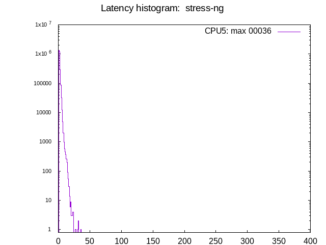

Latency tests: Asus PRIME H310M-A R2.0: GPU, isolcpus=izq
- Date: Thu, 10 Mar 2022 16:22:49 -0600
- Invocation: "./run_tests.sh" "-d" "600" "-1" "-o" "test_h310m_x_stress-ng" "Asus PRIME H310M-A R2.0: GPU, isolcpus=izq"
- cyclictest version: cyclictest V 2.30
- Test duration: 600 seconds
- Kernel commandline: BOOT_IMAGE=/boot/vmlinuz-4.19.0-14-rt-amd64 root=UUID=2c10d0d6-4ed6-49a0-a559-d0cd0eb05b3a ro intel_idle.max_cstate=1 isolcpus=5 isolcpus=5 nohz_full=5 irqaffinity=0-4
- CPU: Intel(R) Core(TM) i5-9400 CPU @ 2.90GHz
- Number of CPUs: 6
- Number of isolated CPUs: 1 (5)
- DMI info: dmi:bvnAmericanMegatrendsInc.:bvr1004:bd09/06/2019:svnSystemmanufacturer:pnSystemProductName:pvrSystemVersion:rvnASUSTeKCOMPUTERINC.:rnPRIMEH310M-AR2.0:rvrRevX.0x:cvnDefaultstring:ct3:cvrDefaultstring:
- OS description: Debian GNU/Linux 10 (buster)
- GPU: Mesa DRI Intel(R) HD Graphics (Coffeelake 3x8 GT2) (0x3e98)
- isolcpus=5
Test #01: stress-ng
